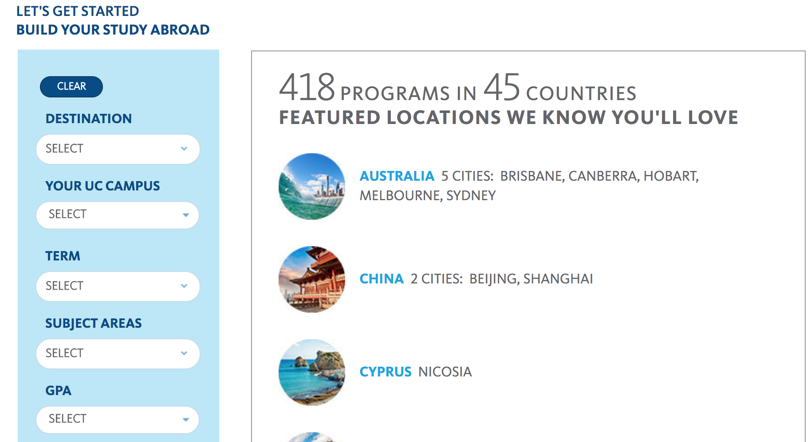
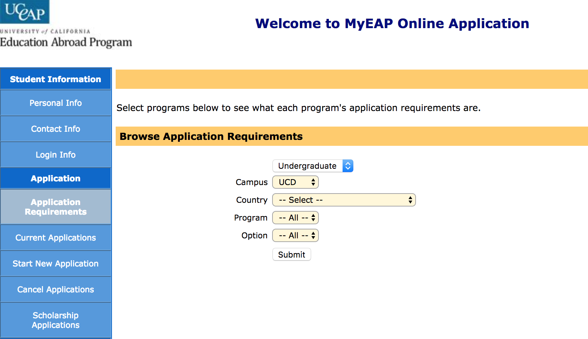

Where do you want to study abroad?
The first step of any study abroad program is deciding where to go! There are quite a few important things to
consider when deciding where to study abroad. Wherever you are going, you are going to be there for a long time
and choosing the right place for you will really shape up the whole experience! Here are a few things everyone
should consider while solidifying a study abroad plan!
- Culture
- Eligiblity and Classes
- Budget
Culture
No matter where you go, you are going to get a culture shock when you start living in a brand new country. In my opinion,
the most important thing about picking a country that suits you best is to do as much research as you can
on the country you are interested in. During the search, you might find alarming reasons why you do not want
to go that country or solidy why you should spend part of your college career there!
Personally, I have always wanted to experience the European culture. I was born in Hong Kong, China and
grew up in San Francisco, United States. Many of the movies, TV shows I have watched in both culture often
showcased the architecture and natural beauty in Europe! I wanted to experience living in a brand new continent
that has countries so close to eachother that it would be easy for me to go around to different country.
Europe became an obvious choice right away!
There were a lot of places that seemed like an interesting but was a definite no to me due to safety concern,
language barrier, and culture custom that I didn't feel like I would fit in with for a long period of time.
There are places fun to travel to, but a different story for study abroad as you will be part of the community
for a long time, really learning about the country, and not just a tourist.
Eligiblity and Classes
Study abroad is fun and all, but it is important to remember you can't study abroad without actually studying!
Eligiblity is a huge deterministic factor for where you can go! Before I started attending UC Davis, I already
knew I wanted to study abroad, but I had no idea what kind of requirement was expected of me before I leave
for my exchange program. There is a GPA requirement that comes with every program. Most of the country requires
at least 2.5+ GPA. This can serverely changes the number of options you have for studying abroad.
Personally, I had a hard time finding a school where I would met the GPA requirement and have computer science
classes that I can use as my upper division units back at my home school, UC Davis. Eventually I found Lund
University, which was the perfect academic choice for me because it has such a huge selection of engineering
classes and I met the GPA requirement.
Budget
Study abroad is definitely very expensive, and your budget will change based on where you are going, and how long you are
planning to study abroad. This is a serious factor to consider. Your budget will change based on where you
go and while picking a place to study abraod in should be about what culture you are interested in, budget
may limit your choices.
In my own experience, I always knew I wanted to study abroad in Europe and that will defintiely be costly.
I started working various jobs once I settled in as a freshmen (2 years ago now wowza) and made budgetary
decisions ever since. Everyone is pretty broke in college obviously, it is up to you to decide what is important
to you to save up for and what you should spend on! Also, do not lag on applying on scholarships and grants
for study abroad!! There are plenty of scholarships that are specifically for certain groups of people for
certain countries. This makes a lot of people not eligble to those scholarships and increases your chance
a lot more if it applies to you! Even without a lot of money, with the right mindset and budgetting skills,
you will still be able to have a lot of fun abroad!
Why UCEAP
If you are a student from any of the University of California schools. You have definitely heard of UCEAP programs. I think
it is a great program to study abroad with! UCEAP have a lot of connections with other schools, during the
application process, you can simply follow the instruction on myeap to apply to the school you're interested
in rather than reaching out to the individual university. Taking classes with UCEAP also gauranteed that
the units will be transferrable back to UC system. However, you will need to make sure the classes you are
taking correspond to the classes you need to graduate by seeing your department advisor.

UCEAP's website may be intimating at first because of the wide selection of countries, universities, and
classes. However, it is fairly easy to navigate once you get used to it! They have a study abraod builder
where you can filter by destination, term, subject area and many more filters that will help you narrow down
the number of programs that suits your interest. You can look at the builder right
here!
Each school also have their own study abroad programs, UC Davis have quite a few seminars, quarter, summer
abraod programs. However, for these programs, they have a limit to how many students can enroll in the program.
The classes offer in the program is also pre-determined. It is common that people end up taking classes that
they don't actually need. However, these classes will have no problem transferri on your transcript. You
can look at more Davis abroad program
here!
Application Process
This is for UCEAP study abroad program only!
A lot of students get the misconceptions that you can apply the quarter before by talking to your advisor and go from there.
That is not true! A lot of people I know end up missing out on study abroad opportunity because they missed
the application deadline! UCEAP program have deadline that is almost a year in advance! If you have finalized
which program you are going to do with UCEAP and which term you are planning to do it, it is best to check
the deadline asap as it comes faster than you think!! You can check the deadline by either going to your
UCEAP center on campus or online right
here.
All of the uceap application are done online on a portal call myeap portal!

You can apply to multiple program at once but the advisors told me that you should only apply to one that
you are eligble for as it is very likely you will get into the UCEAP program you want. Make sure to check
in with the sstudy abroad advisor on your campus to make sure you fit all the requirements and on tract to
graduation still!
Once you apply, there is a few months wait before you get the results whether you get in or not. But once
you hear back, you have a grace period where you can decide to back out of the program or not. There will
be a penalty fee after this time period so be careful!! When you hear back from UCEAP, that means the University
of California has recommended you as a student to your host university, this does not mean you have gotten
into the program for sure. You also have to wait to hear back from host university directly to solidify your
admission to the study abroad program.
I will definitely update this as I go, I just dont know what else to write and I wanna make more pages! :))))